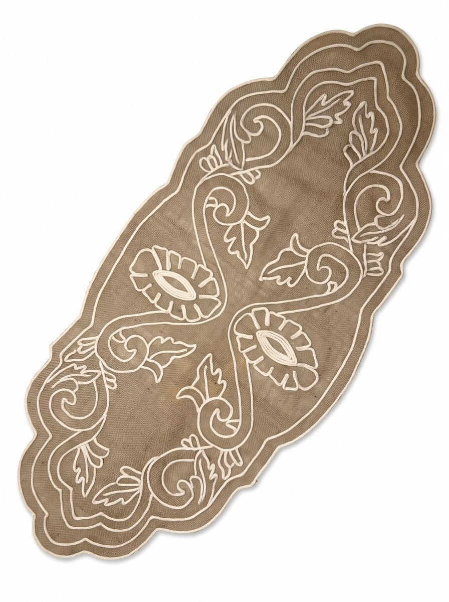

MESA-001
Caminhos de Mesa

Caminho de Mesa — Juta & Arabescos Florais
Preço sob consulta
Caminho de mesa oval recortado em tecido rústico de trama natural (juta/linho cru) com bordado artesanal em cordão claro formando arabescos florais simétricos e acabamento contornado em toda a borda.
- Base estruturada em tecido rústico natural
- Aplicação artesanal em cordão de algodão cru
- Design recortado com curvas orgânicas
- Ideal para mesas de jantar, aparadores e buffets